Fundamentals of R (2)
Function
Functions are set of instructions that execute as group. Think of functions as a machine that takes inputs (potentially many) and returns an output (sometimes nothing, but never more than one single output). Function of R is create by using keyword function{}
pow <- function(x,y){
result <- x^y
print(paste(x,"raised to the power",y,"is",result))
}We have created a function called pow(). It takes two arguments, finds the first argument raised to the power of second argument and prints the result in a sentence. Two build-in function are used which are print() and paste(). The function print() is display the output on the console while the paste() is concatenate strings.
Function call
pow(8,2)## [1] "8 raised to the power 2 is 64"pow(2,4)## [1] "2 raised to the power 4 is 16"The function created by user is called user defined function(UDF). UDF is created if there is no existing function is available in current environment.
function.name <- function(arguments){
set of intructions
}In the above function calls, the argument matching of formal argument to the actual arguments takes place in positional order. This means that, in the call pow(8,2), the formal arguments x and y are assigned 8 and 2 respectively. We can also call the function using named arguments. When calling a function in this way, the order of the actual arguments doesn’t matter:
pow(8,2)## [1] "8 raised to the power 2 is 64"pow(x=8,y=2)## [1] "8 raised to the power 2 is 64"pow(y=2,x=8)## [1] "8 raised to the power 2 is 64"We can also use named and unnamed arguments in a single call. In such case, all named arguments are matched first and then the remaining unnamed arguments are matched in a positional order:
pow(x=8,2)## [1] "8 raised to the power 2 is 64"pow(2,x=8)## [1] "8 raised to the power 2 is 64"We can assign default values to arguments in a function in R. This is done by providing an appropriate value to the formal argument in the function declaration.
pow <- function(x,y=2){
result <- x^y
print(paste(x,"raised to the power",y,"is",result))
}pow(3) # x=3## [1] "3 raised to the power 2 is 9"pow(3,3) #x=3,y=3## [1] "3 raised to the power 3 is 27"Note that the output of the function is always the last line (instruction) of what is in between the curly brackets. Indeed, remember that in R there is always one instruction per line. We can use return() to return a value immediately from a function.
div <- function(x,y){
if(y==0){
return(print("Denominator cannot be 0"))
}
else{
result <- x/y
return(result)
}
}div(10,2)## [1] 5div(x=10,y=0)## [1] "Denominator cannot be 0"We only can return single object from function. If we need to return multiple values in R function, we can use a vector or list:
multi_return <- function(x,y){
res1 <- x+y
res2 <- x-y
res3 <- x*y
result <- c(A=res1,B=res2,C=res3)
return(result)
}multi_return(3,5)## A B C
## 8 -2 15We can assign the output from function to a variable:
output <- multi_return(3,9)
output## A B C
## 12 -6 27output["A"]## A
## 12output[c("A","C")]## A C
## 12 27Graph
# Create two sets of random number
x <- rnorm(10)
y <- rnorm(10)Using plot() to create a graph:
plot(x,y)
plot(y~x)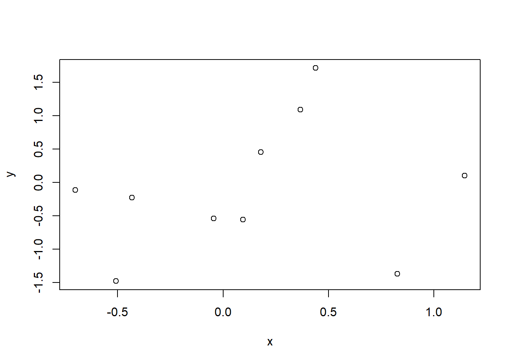 Can add arguments to tune the graph:
plot(x, y, col = "red")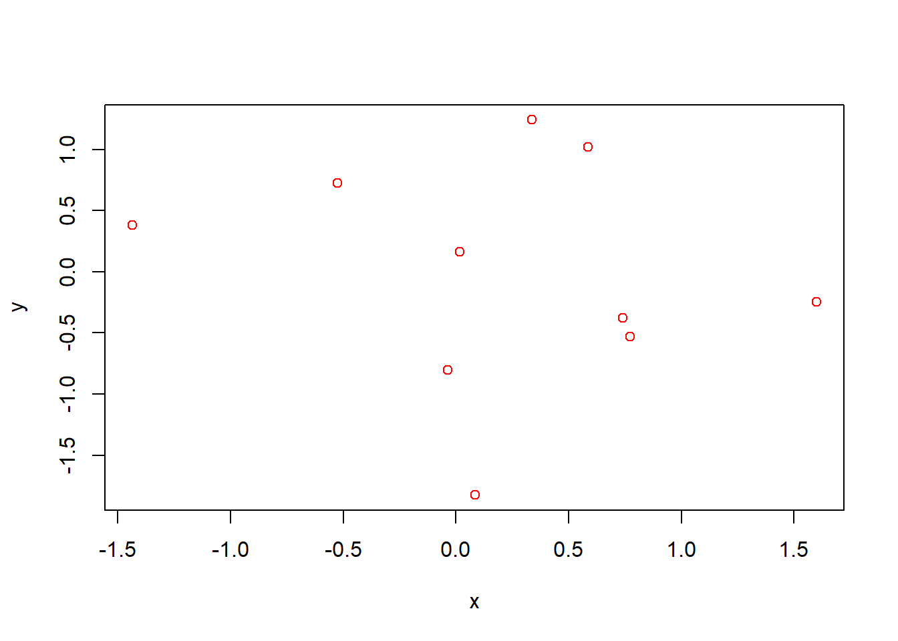
plot(x, y, col = "red", pch = 19)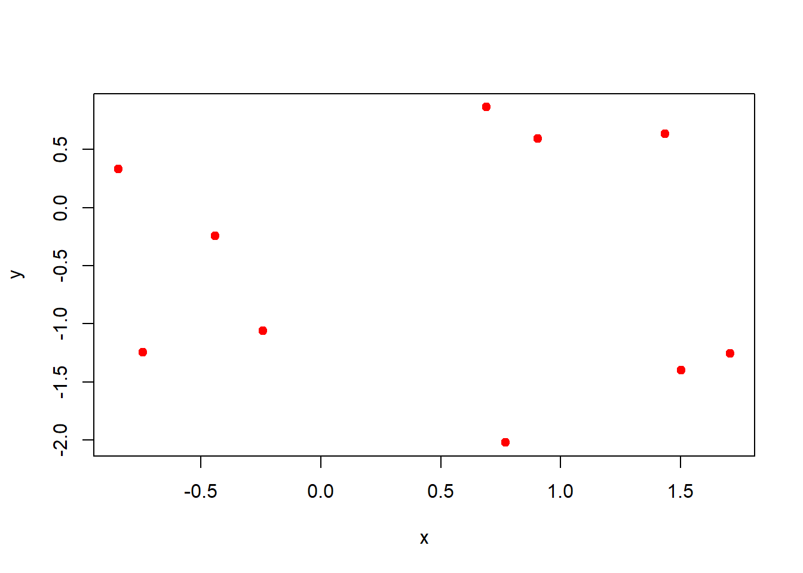
plot(x, y, col = "red", pch = 19, cex = 3)
plot(x, y, col = "red", pch = 19, cex = 3, xlab = "x axis", ylab = "y axis")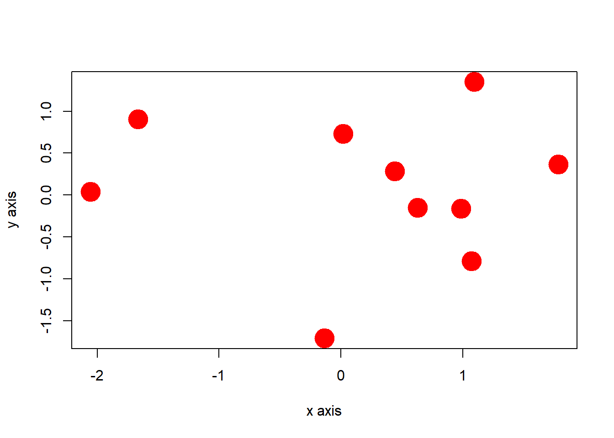
plot(x, y, col = "red", pch = 19, cex = 3, xlab = "x axis", ylab = "y axis", main = "title")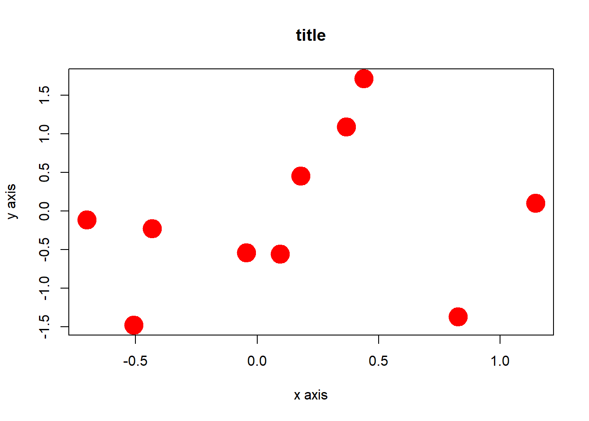
plot(x, y, col = "red", pch = 19, cex = 3, xlab = "x axis", ylab = "y axis",main = "title",
xlim = c(-10, 10), ylim = c(-5, 5))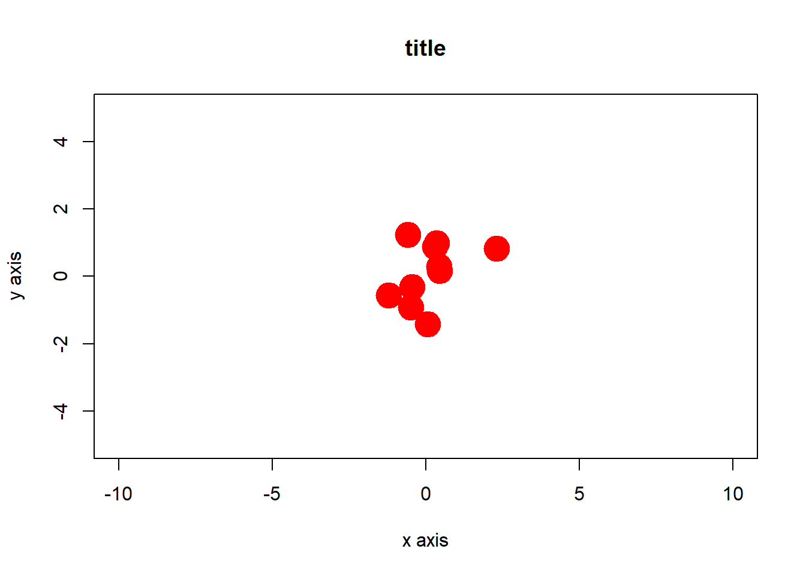
plot(x, y, col = "red", pch = 19, xlab = "x axis", ylab = "y axis",
main = "title", xlim = c(-10, 10), ylim = c(-5, 5), type = "l")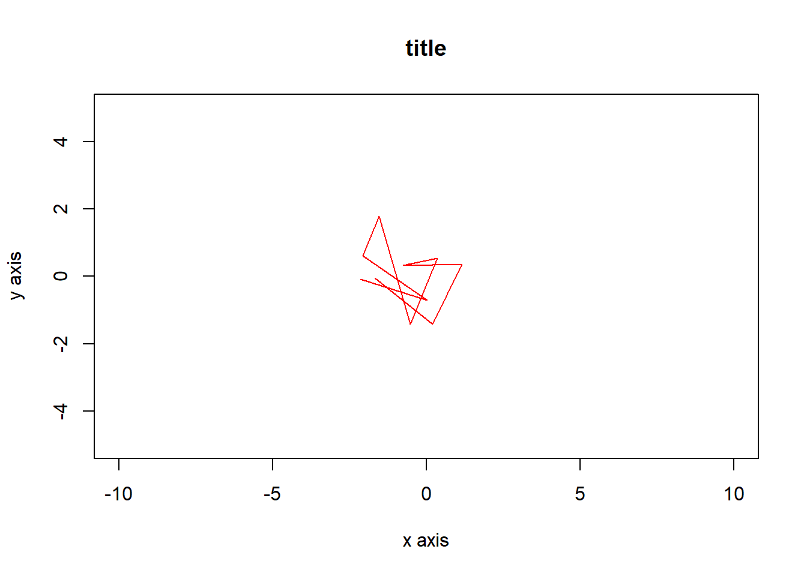
plot(x, y, col = "red", pch = 19, xlab = "x axis", ylab = "y axis",
main = "title", xlim = c(-10, 10), ylim = c(-5, 5), type = "l")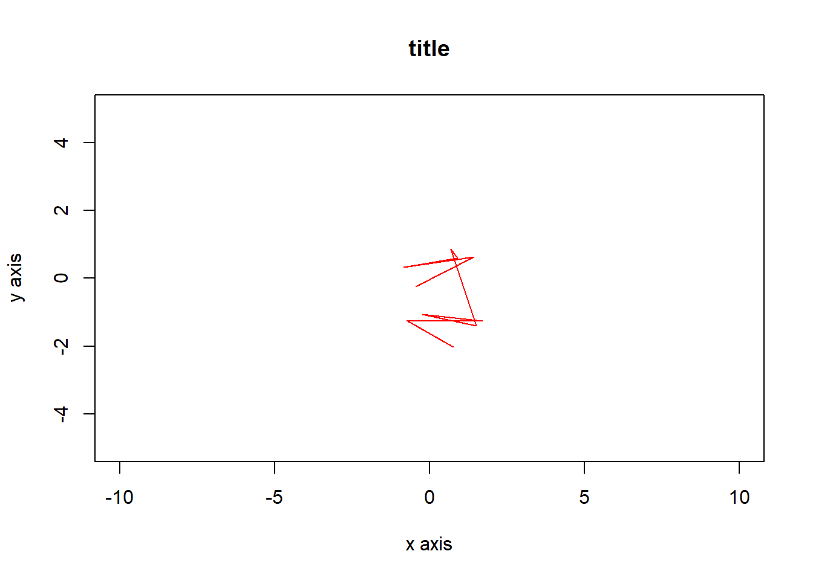
plot(x, y, col = "red", pch = 19, xlab = "x axis", ylab = "y axis",
main = "title", xlim = c(-10, 10), ylim = c(-5, 5), type = "l")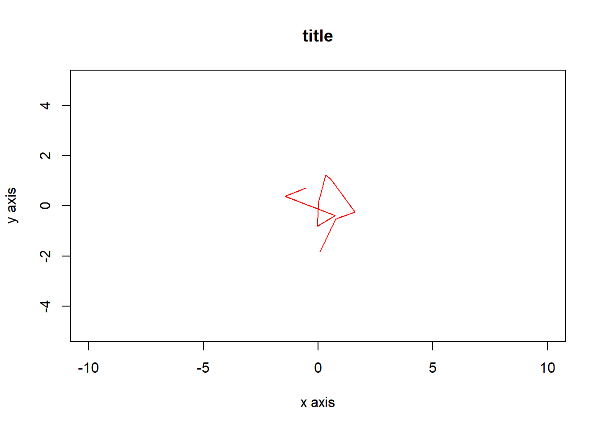
plot(x, y, col = "red", pch = 19, xlab = "x axis", ylab = "y axis",
main = "title", xlim = c(-10, 10), ylim = c(-5, 5), type = "l", lwd = 3)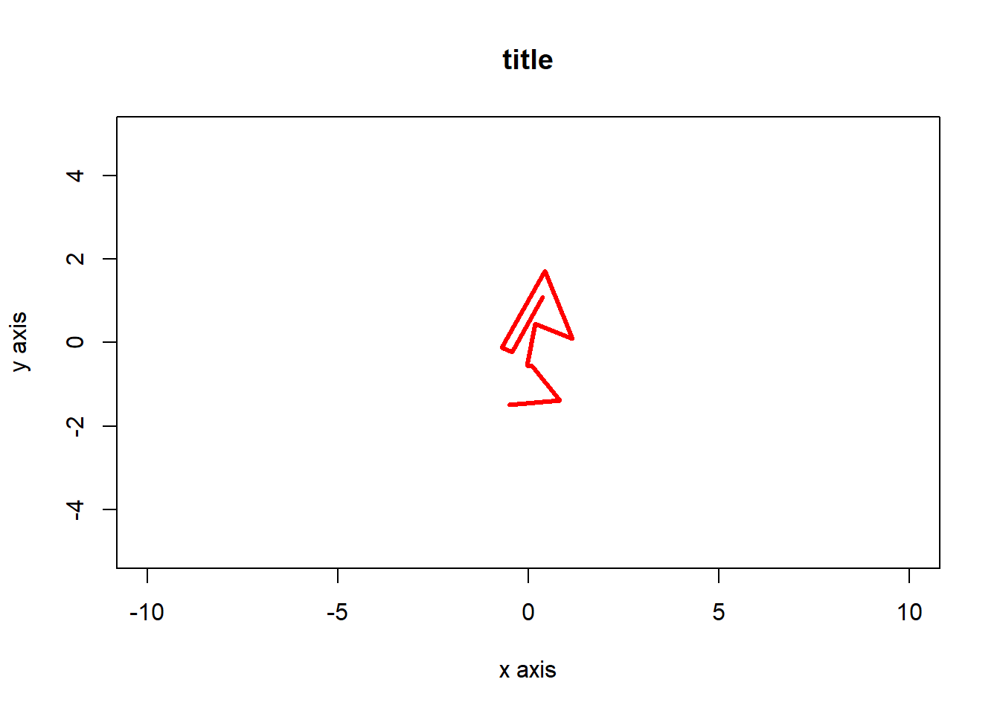
There are 2 categories of function to draw graphs. The first category, called primary functions always erase whatever graph that already exists and create a new one. This is the case of the plot() that we saw above. The other category, secondary functions always add elements to an already existing graph. If no graph is already created then these secondary functions won’t work.
Among the primary functions commonly used are plot(), barplot(), hist(), plus an endless list of other functions. Among the common secondary functions are line(), abline(), points(), legend(), axis(), title(), legend(), plus many others. Again, do you research on the internet. Here is an example of the use of a primary and a secondary functions:
plot(x, y, col = "red", pch = 19)
abline(0, 1, col = "blue", lwd = 2, lty = 2)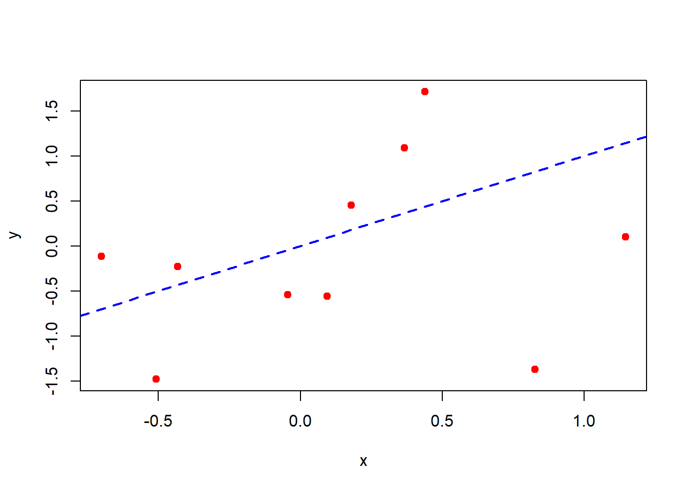
Packages
R packages are a collection of R functions, complied code and sample data. They are stored under a directory called library() in the R environment. By default, R installs a set of packages during installation. More packages are added later, when they are needed for some specific purpose. When we start the R console, only the default packages are available by default. Other packages which are already installed have to be loaded explicitly to be used by the R program that is going to use them. We have seen some of the functions is under base package which are ls(),rm(),list(),data.frame(). The graph function used on previous section plot(),hist(),points(),abline(),legend() are under under graphics packages. Since R is open source, user can develop other packages for others to use.
To install package, install.packages() is called by passing package name as argument:
install.packages("Package Name")We will use the package deSolve for SIR modeling and bbmle for model calibration.
install.packages("deSolve")
install.packages("bbmle")To use those packages, library() is use:
library(deSolve)
library(bbmle)Script
We can write our code in R script and save in .R to source it in other scripts:
##open new script and create some objects
func1 <- function(x,y){
result <- x*y
return(result)
}
func2 <- function(x,y){
if(y==0){
return(print('y cannot be 0'))
}
else{
result <- x/y
return(result)
}
}
vec1 <- c("Computer Science","Mathematical Modeling","Epidemiology")Save the script and named as script1.R and source it in another script:
source('scripts/script1.R')
func1(10,2)## [1] 20func2(10,0)## [1] "y cannot be 0"func2(10,5)## [1] 2vec1## [1] "Computer Science" "Mathematical Modeling" "Epidemiology"